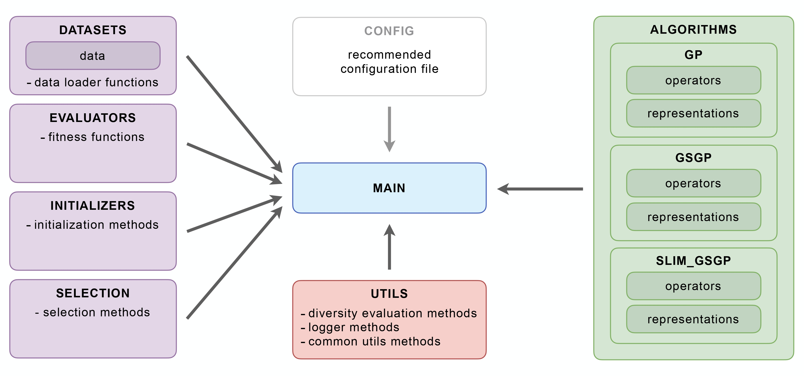

SLIM (Semantic Learning algorithm based on Inflate and deflate Mutation) Documentation
{kind=link}
User Guide
slim_gsgp is a Python library that implements the SLIM algorithm, which is a variant of the Geometric Semantic Genetic Programming (GSGP). This library includes functions for running standard Genetic Programming (GP), GSGP, and all developed versions of the SLIM algorithm. Users can specify the version of SLIM they wish to use and obtain results accordingly.
Installation
To install the library, use the following command:
pip install slim_gsgp
Additionally, make sure to install all required dependencies:
pip install -r requirements.txt
Usage
Running GP
To use the GP algorithm, you can use the following example:
from slim_gsgp.main_gp import gp # import the slim library
from slim_gsgp.datasets.data_loader import load_ppb # import the loader for the dataset PPB
from slim_gsgp.evaluators.fitness_functions import rmse # import the rmse fitness metric
from slim_gsgp.utils.utils import train_test_split # import the train-test split function
# Load the PPB dataset
X, y = load_ppb(X_y=True)
# Split into train and test sets
X_train, X_test, y_train, y_test = train_test_split(X, y, p_test=0.4)
# Split the test set into validation and test sets
X_val, X_test, y_val, y_test = train_test_split(X_test, y_test, p_test=0.5)
# Apply the GP algorithm
final_tree = gp(X_train=X_train, y_train=y_train,
X_test=X_val, y_test=y_val,
dataset_name='ppb', pop_size=100, n_iter=100)
# Show the best individual structure at the last generation
final_tree.print_tree_representation()
# Get the prediction of the best individual on the test set
predictions = final_tree.predict(X_test)
# Compute and print the RMSE on the test set
print(float(rmse(y_true=y_test, y_pred=predictions)))
Running standard GSGP
To use the GSGP algorithm, you can use the following example:
from slim_gsgp.main_gsgp import gsgp # import the slim library
from slim_gsgp.datasets.data_loader import load_ppb # import the loader for the dataset PPB
from slim_gsgp.evaluators.fitness_functions import rmse # import the rmse fitness metric
from slim_gsgp.utils.utils import train_test_split # import the train-test split function
from slim_gsgp.utils.utils import generate_random_uniform # import the mutation step function
# Load the PPB dataset
X, y = load_ppb(X_y=True)
# Split into train and test sets
X_train, X_test, y_train, y_test = train_test_split(X, y, p_test=0.4)
# Split the test set into validation and test sets
X_val, X_test, y_val, y_test = train_test_split(X_test, y_test, p_test=0.5)
# Apply the Standard GSGP algorithm
final_tree = gsgp(X_train=X_train, y_train=y_train,
X_test=X_val, y_test=y_val,
dataset_name='ppb', pop_size=100, n_iter=100,
ms=generate_random_uniform(0, 1))
# Get the prediction of the best individual on the test set
predictions = final_tree.predict(X_test)
# Compute and print the RMSE on the test set
print(float(rmse(y_true=y_test, y_pred=predictions)))
Running SLIM
To use the SLIM GSGP algorithm, you can use the following example:
from slim_gsgp..main_slim import slim # import the slim library
from slim_gsgp.datasets.data_loader import load_ppb # import the loader for the dataset PPB
from slim_gsgp..evaluators.fitness_functions import rmse # import the rmse fitness metric
from slim_gsgp.utils.utils import train_test_split # import the train-test split function
from slim_gsgp.utils.utils import generate_random_uniform # import the mutation step function
# Load the PPB dataset
X, y = load_ppb(X_y=True)
# Split into train and test sets
X_train, X_test, y_train, y_test = train_test_split(X, y, p_test=0.4)
# Split the test set into validation and test sets
X_val, X_test, y_val, y_test = train_test_split(X_test, y_test, p_test=0.5)
# Apply the SLIM GSGP algorithm
final_tree = slim(X_train=X_train, y_train=y_train,
X_test=X_val, y_test=y_val,
dataset_name='ppb', slim_version='SLIM+SIG2', pop_size=100, n_iter=100,
ms=generate_random_uniform(0, 1), p_inflate=0.5)
# Show the best individual structure at the last generation
final_tree.print_tree_representation()
# Get the prediction of the best individual on the test set
predictions = final_tree.predict(X_test)
# Compute and print the RMSE on the test set
print(float(rmse(y_true=y_test, y_pred=predictions)))
Arguments for the gp, gsgp and slim function
Common arguments
X_train: A torch tensor with the training input data (default: None).y_train: A torch tensor with the training output data (default: None).X_test: A torch tensor with the testing input data (default: None).y_test: A torch tensor with the testing output data (default: None).dataset_name: A string specifying how the results will be logged (default: None).pop_size: An integer specifying the population size (default: 100).n_iter: An integer specifying the number of iterations (default: 1000).elitism: A boolean specifying the presence of elitism (default: True).n_elites: An integer specifying the number of elites (default: 1).init_depth: An integer specifying the initial depth of the GP tree - default: 6 for gp and slim - default: 8 for gsgplog_path: A string specifying where the results are going to be saved - default:os.path.join(os.getcwd(), "log", "gp.csv")for slim - default:os.path.join(os.getcwd(), "log", "gsgp.csv")for slim - default:os.path.join(os.getcwd(), "log", "slim_gsgp.csv")for slimseed: An integer specifying the seed for randomness (default: 1).log_level: An integer specifying the Level of detail to utilize in logging (default: 1).verbose: An integer specifying whether results are to be displayed on console (default: 1).fitness_function: A string specifying the fitness function that is to be used (default: “rmse”).initializer: A string specifying the population initialization technique that is to be used (default: “rhh”).minimization: A bool specifying whether the objective is to minimize the fitness function (True) or to maximize it (False) (default: True).prob_const: A float specifying the probability of a constant being chosen rather than a terminal in trees creation (default: 0.2).tree_functions: A list of strings with the names of the functions that are to be used in the trees (default: [‘add’, ‘subtract’, ‘multiply’, ‘divide’]).tree_constants: A list of floats or integer values representing the constants that are allowed to appear in the trees (default: [2, 3, 4, 5, -1]).tournament_size: An int representing the tournament size to utilize during selection (default: 2).test_elite: A bool representing whether to test the elite individual on the test set at each generation (default: True when X_test is not None).
Specific for gp
p_xo: A float specifying the crossover probability (default: 0.8).max_depth: An integer specifying the maximum depth of the GP tree (default: 17).
Specific for gsgp
p_xo: A float specifying the crossover probability (default: 0.0).ms_lower: Lower bound for mutation step (default: 0).ms_upper: Upper bound for mutation step (default: 1).reconstruct: A bool specifying whether to store the structure of individuals. More computationally expensive, but allows usage outside the algorithm (default: False).
Specific for slim
slim_version: A string specifying the version of SLIM-GSGP to run (default: “SLIM+SIG2”).ms_lower: A float or int representing the lower bound for mutation step (default: 0).ms_upper: A float or int representing the upper bound for mutation step (default: 1).reconstruct: A bool specifying whether to store the structure of individuals. More computationally expensive, but allows usage outside the algorithm (default: False).copy_parent: A bool representing whether to copy the original parent when mutation is impossible (due to depth rules or mutation constraints). (default: True).p_inflate: A float specifying the probability to apply the inflate mutation (default: 0.2).
Additional Notes
If a user wishes to use their own dataset rather than one of the sixteen benchmarking datasets included with the slim library, they can load their data into a Pandas DataFrame,
ensuring that the target variable is the last column. They can then call the load_pandas_df function from datasets.data_loader as follows:
from slim_gsgp.datasets.data_loader import load_pandas_df # import the loader for pandas DataFrames
import pandas as pd
# Reading the desired dataset
df = pd.read_csv("path/your_data.csv")
# Turning df into X and y torch.Tensors
X, y = load_pandas_df(df,X_y=True)
# Split into train and test sets
X_train, X_test, y_train, y_test = train_test_split(X, y, p_test=0.4)
# Split the test set into validation and test sets
X_val, X_test, y_val, y_test = train_test_split(X_test, y_test, p_test=0.5)
License
This library is MIT licensed.
The datasets provided are public. The table below specifies the source and license of each dataset.
Dataset |
Source |
License |
|---|---|---|
airfoil |
Creative Commons Attribution 4.0 International (CC BY 4.0) |
|
bike sharing |
Creative Commons Attribution 4.0 International (CC BY 4.0) |
|
bioavailability |
|
Creative Commons Attribution 4.0 International (CC BY 4.0) |
breast cancer |
Creative Commons Attribution 4.0 International (CC BY 4.0) |
|
concrete slump |
Creative Commons Attribution 4.0 International (CC BY 4.0) |
|
concrete strength (different number of instances) |
Creative Commons Attribution 4.0 International (CC BY 4.0) |
|
diabetes |
CC0 License |
|
efficiency_cooling |
Creative Commons Attribution 4.0 International (CC BY 4.0) |
|
efficiency_heating |
Creative Commons Attribution 4.0 International (CC BY 4.0) |
|
forest fires |
Creative Commons Attribution 4.0 International (CC BY 4.0) |
|
istanbul |
Creative Commons Attribution 4.0 International (CC BY 4.0) |
|
ld50 |
|
Creative Commons Attribution 4.0 International (CC BY 4.0) |
parkinsons_total_UPDRS |
Creative Commons Attribution 4.0 International (CC BY 4.0) |
|
ppb |
|
Creative Commons Attribution 4.0 International (CC BY 4.0) |
resid_build_sale_price |
Creative Commons Attribution 4.0 International (CC BY 4.0) |
*Archetti, F., Lanzeni, S., Messina, E., Vanneschi, L. (2007). Genetic Programming and Other Machine Learning Approaches to Predict Median Oral Lethal Dose (LD50) and Plasma Protein Binding Levels (%PPB) of Drugs. In: Marchiori, E., Moore, J.H., Rajapakse, J.C. (eds) Evolutionary Computation, Machine Learning and Data Mining in Bioinformatics. EvoBIO 2007. Lecture Notes in Computer Science, vol 4447. Springer, Berlin, Heidelberg. https://doi.org/10.1007/978-3-540-71783-6_2